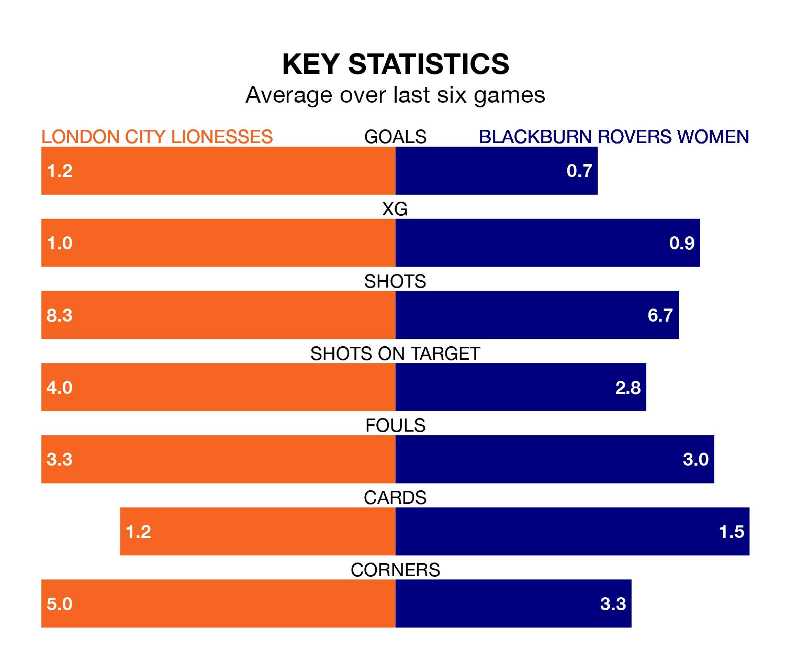

London City Lionesses face Blackburn Rovers Women at Princes Park on Sunday lunchtime looking to secure a first win in six FA Women's Championship games.
The Lionesses have lost four and drawn one matches since they last earned three points – against Blackburn Rovers Women on November 5.
They face a Blackburn Rovers side who have won just one and lost four over that time.
In the last 10 years, London City and Blackburn Rovers have played each other on eight occasions. London City won six of them, Blackburn Rovers one, and they drew once.
On average, the Lionesses scored 2.0 goals and Blackburn Rovers 0.8 in those matches.
Their last meeting was on November 5, when London City won 3-0 away.
London City are 10th in the table after 14 games, of which they have won three and drawn three, earning 12 points.
Blackburn Rovers are three places ahead of the Lionesses in seventh, with five wins and seven losses putting them on 15 points.
With Alexandra Brooks between the sticks, the visitors can rely on one of the league's safest pair of hands. She has kept four clean sheets in her 12 appearances this season in the FA Women's Championship.
In the home side's net, Grace Moloney has three clean sheets in 12 games. She has conceded a goal every 57 minutes, 10% more often than the 64 minutes between goals for Brooks.
With 10 goals in 12 games so far this season, Blackburn Rovers are the league's joint-second-lowest scorers with 0.8 goals per game. And they are conceding more than average, letting in 18 goals at a rate of 1.5 per game.
London City are also below average scorers, with 1.0 goal per game, compared to a league average of 1.3. They have conceded 1.7 goals per game.
London City's last match was on Sunday, a 1-0 loss against Birmingham City Women.
Blackburn Rovers lost 2-0 against Sunderland Women last time out, on January 27.
Updated: 15:45 (UTC), 02/02/24